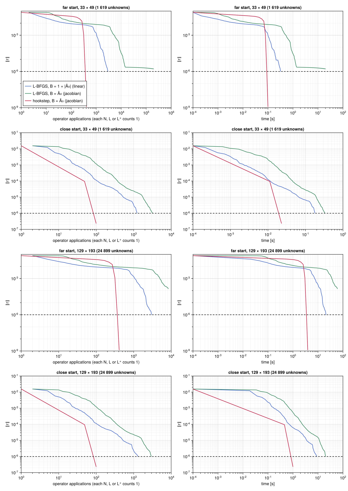
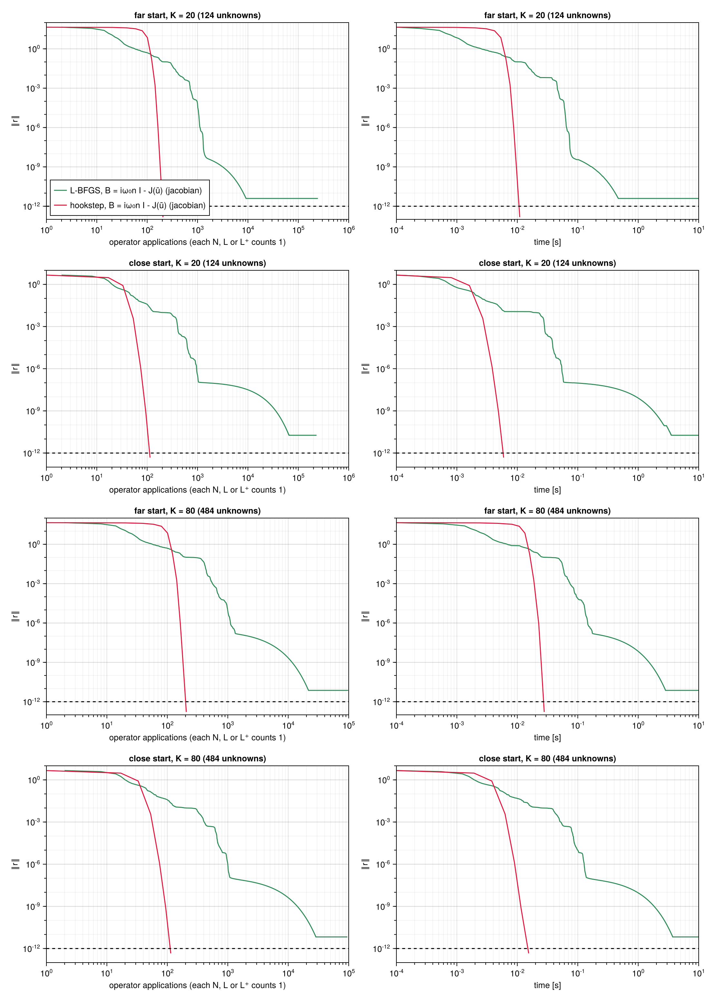
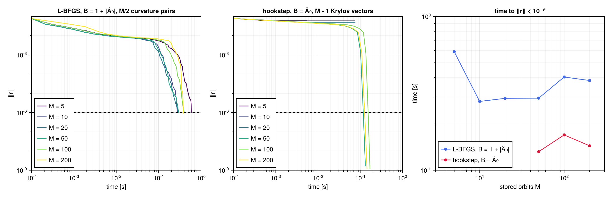
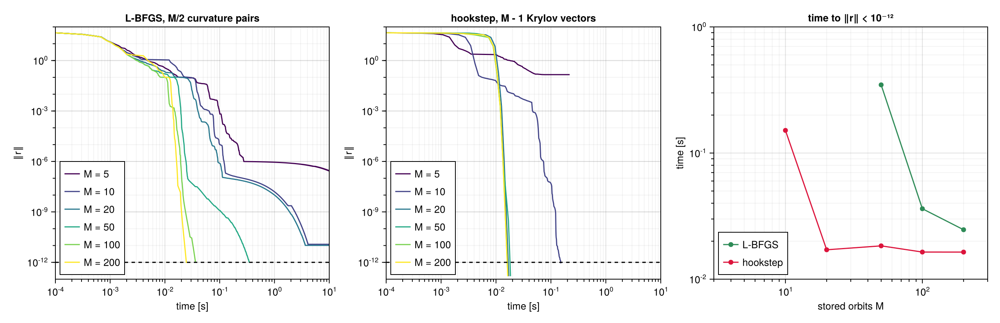
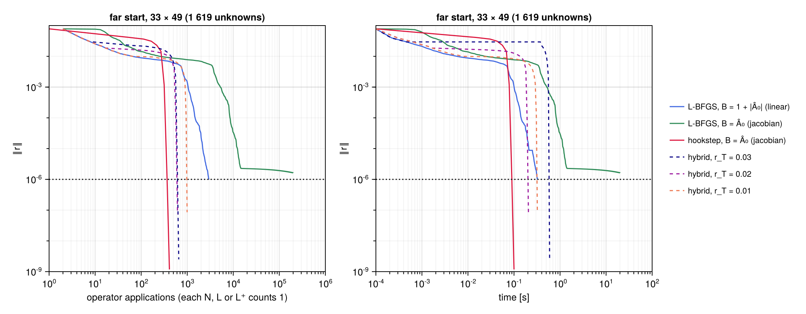
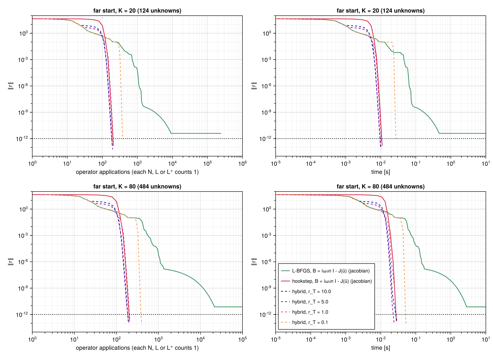

L-BFGS against the hookstep
The two methods of the package solve the same problem in different ways: LBFGS minimises $R = \tfrac12\lVert r\rVert^2$ with gradients, NewtonHookstep solves $r = 0$ with Jacobian actions. Counted in iterations the comparison is meaningless, since a Newton iteration contains a whole Krylov solve. This page compares them at equal cost, on both examples, with the preconditioner that captures the whole linear space-time operator, and studies two practical questions: how the methods behave when the memory available for stored orbits is limited, and whether a hybrid search, L-BFGS first and the hookstep after, pays off. The scripts are examples/lorenz/methods.jl and examples/kuramoto_sivashinsky/methods.jl.
Measuring the cost
Operator applications. The cost of a search is dominated by the operators of the system, each of which acts on a whole space-time field. The figures count operator applications: every application of the nonlinear operator $N$, of the linearised operator $L$ or of the adjoint operator $L^+$ counts as one. In the two methods,
| operation | operators | where |
|---|---|---|
| residual $r$ | one $N$ | every trial point of the L-BFGS line search and of the trust region, and the right-hand side of every Newton system |
| gradient $\nabla R$ | one $N$ and one $L^+$ | every accepted L-BFGS iterate |
| Jacobian action $\mathcal{J}\,\delta p$ | one $L$ | every Arnoldi step of the hookstep |
so that an L-BFGS iteration costs at least three applications, one $N$ and one $L^+$ for the gradient and one $N$ for the first trial point of the line search, and a Newton iteration with a Krylov space of $n$ vectors costs $n$ applications of $L$ and two or more of $N$. Derivatives, preconditioner applications, inner products and the small dense problems of the two methods are not counted, but are included in the wall-clock time.
Are the three operators equally expensive? Counting them alike is fair only if they cost about the same, which depends on their implementation, not on the methods. The scripts measure them first (best of five batches, after compilation):
| system | $N$ | $L$ | $L^+$ | residual | gradient | Jacobian action | $B^{-1}$ |
|---|---|---|---|---|---|---|---|
| Lorenz, $K = 40$ | 45.5 | 43.7 | 43.8 | 46.0 | 115.1 | 46.9 | 4.7 |
| KS, $33 \times 49$ | 16.9 | 17.0 | 23.0 | 44.5 | 120.1 | 71.1 | 14.4 |
| KS, $129 \times 193$ | 1 307 | 1 309 | 1 765 | 3 125 | 8 704 | 6 405 | 927 |
Times in μs per call. Residual, gradient and Jacobian action are the functions of the package, which add the derivatives, the inner products and, for the gradient, a residual and a linearisation to the operators.
The check found two inefficiencies in the first versions of the examples, both fixed. In the Lorenz model the linearised and adjoint operators allocated a $3 \times 3$ matrix at every grid point and cost 2.7 times the nonlinear operator; written out component by component they cost the same. In the Kuramoto–Sivashinsky model the adjoint operator computed $\partial_x w$ with a transform pair of its own, five FFTs against three for $N$ and $L$; computing it from the coefficients of $w$, already available, brings it to four, the minimum for $U\,\partial_x w$. With the operators balanced, a gradient costs two and a half to three residuals, since it includes a residual, a linearisation and an adjoint operator, and a Jacobian action one to two, since it adds the derivatives and the preconditioner to the linearised operator.
The two preconditioners of L-BFGS
With a preconditioner $B$, L-BFGS works in the metric $\langle p, q\rangle_B = \langle Bp, Bq\rangle$: its first direction is $-M^{-1}\nabla R$ with $M = B^+B$, and its initial inverse Hessian $\theta M^{-1}$ (see Preconditioning). Equivalently, it runs plain L-BFGS on the variables $q = Bp$, in which the Gauss–Newton Hessian of $R$ is $(\mathcal{J}B^{-1})^+(\mathcal{J}B^{-1})$. Its convergence is therefore governed by the singular values of $\mathcal{J}B^{-1}$, the square roots of the eigenvalues of that Hessian, and not by the clustering of its eigenvalues, which governs GMRES.
For Kuramoto–Sivashinsky two preconditioners built on the symbol $\hat A_0 = \mathrm{i}(\omega_0 n - c_0 k) + k^4 - k^2$ of the linear space-time operator are compared (see Preconditioners):
- linear, $B = 1 + |\hat A_0|$, real and positive: it rescales each Fourier mode by the size of the operator, so that L-BFGS works in the metric with symbol $(1 + |\hat A_0|)^2$;
- jacobian, $B = \hat A_0$, complex: the operator itself, metric with symbol $|\hat A_0|^2$.
For the hookstep the second is three times cheaper; for L-BFGS it is worse, because $|\hat A_0|$ is small, between $0.075$ and $0.22$, on the linearly unstable wavenumbers $0 < k < 1$ at $n = 0$, where the advection by the orbit, which the preconditioner ignores, is not small. On these modes $\mathcal{J}B^{-1}$ has singular values up to about 15, and its condition number is $1.6 \times 10^{3}$, against $2.4 \times 10^{2}$ with the linear preconditioner. For the Lorenz system the jacobian preconditioner, $B = \mathrm{i}\,\omega_0 n\,I - J(\bar u)$ on the mode $n$, is used for both methods.
Kuramoto–Sivashinsky
Two starts, each on the base grid and on a grid refined four times: far, the near-recurrence of the first search, with $\lVert r\rVert = 7.8 \times 10^{-2}$, and close, the converged orbit perturbed as in the convergence study, with $\lVert r\rVert = 1.6 \times 10^{-2}$. The searches stop at $\lVert r\rVert < 10^{-6}$, a residual small enough to identify the orbit, or after 20 s (base grid) or 60 s (fine grid); L-BFGS keeps 10 curvature pairs, the hookstep up to 150 Krylov vectors.

Residual against the operator applications (left) and the wall-clock time (right), for the four searches. Dashed: the tolerance $10^{-6}$.
| start, grid | L-BFGS, linear | L-BFGS, jacobian | hookstep, jacobian |
|---|---|---|---|
| far, $33 \times 49$ | 2 949 | not reached ($1.6 \times 10^{-6}$ after $2 \times 10^{5}$) | 411 |
| close, $33 \times 49$ | 1 232 | 3 208 | 100 |
| far, $129 \times 193$ | 2 982 | not reached ($1.4 \times 10^{-4}$ after 60 s) | 411 |
| close, $129 \times 193$ | 1 305 | 2 949 | 100 |
Operator applications to $\lVert r\rVert < 10^{-6}$.
Counted in operator applications the hookstep is the cheaper method in all four searches: seven times cheaper than the better L-BFGS from the far start, twelve times from the close one. For both methods the count does not depend on the resolution: the two grids differ by a few percent, the mark of a preconditioner that captures the stiffness of the problem at every scale. In wall-clock time the advantage of the hookstep is smaller on the base grid, 0.10 s against 0.32 s from the far start, because there the operators are cheap and the dense linear algebra of the hookstep, the Hessenberg least-squares problems and the orthogonalisation of the Krylov basis, is not negligible; on the fine grid, where the operators dominate, the ratio of times approaches that of the counts, 3.9 s against 20.8 s.
The two preconditioners of L-BFGS behave very differently. With the linear one L-BFGS converges at a steady rate. With the jacobian one it is slower from the close start, by a factor of 2.3 to 2.6, and from the far start it reaches $10^{-3}$ five times later and then almost stops: on the base grid the residual decreases from $1.24 \times 10^{-6}$ to $1.20 \times 10^{-6}$ between iterations $10^{4}$ and $2 \times 10^{4}$. The search is not stuck: each line search accepts the full step, and the residual decreases by a factor of about $1 - 3.5 \times 10^{-6}$ per iteration, the linear convergence of a quasi-Newton method on a very ill-conditioned problem. The singular values of $\mathcal{J}B^{-1}$ span $10^{-2}$ to 15 with the jacobian preconditioner, against $10^{-2}$ to 1.8 with the linear one: the smallest are the same, the largest come from the linearly unstable wavenumbers, where $|\hat A_0|$ is small. The steps of a gradient-based method are limited by the largest curvature, so the components of small curvature converge much more slowly with the jacobian preconditioner: for steepest descent, $(15/1.8)^2 \approx 70$ times more slowly. The residual left is concentrated, 87% of its energy, in the unstable wavenumbers $m = 1, 2$ at $n = 0$.
Lorenz system
Two starts, each with $K = 20$ and $K = 80$ modes: far, the converged orbit perturbed by 10% on its five lowest modes and by $0.05$ in the log-frequency, with $\lVert r\rVert = 45$, and close, perturbed by 1% and $0.01$ as in the convergence study, with $\lVert r\rVert = 4.6$. The searches stop at $\lVert r\rVert < 10^{-12}$ or after 10 s; L-BFGS keeps 10 curvature pairs, the hookstep up to 100 Krylov vectors.

Residual against the operator applications (left) and the wall-clock time (right), for the four searches. Dashed: the tolerance $10^{-12}$.
| start, $K$ | L-BFGS, to $10^{-3}$ | L-BFGS, to $10^{-6}$ | L-BFGS, to $10^{-12}$ | hookstep, to $10^{-12}$ |
|---|---|---|---|---|
| far, 20 | 712 | 1 118 | not reached | 206 |
| close, 20 | 402 | 956 | not reached | 114 |
| far, 80 | 561 | 1 109 | not reached | 206 |
| close, 80 | 408 | 1 002 | not reached | 114 |
Operator applications to each residual level; the hookstep jumps from above $10^{-3}$ to below $10^{-6}$ in a single Newton iteration, after 164 applications from the far start and 74 to 94 from the close one.
The picture is the same as for Kuramoto–Sivashinsky, with the same preconditioner for both methods: the hookstep reaches $10^{-12}$ with five to ten times fewer applications than L-BFGS needs for $10^{-6}$, at a cost independent of the number of modes. L-BFGS does not reach $10^{-12}$ within 10 s: it stalls between $4 \times 10^{-12}$ and $2 \times 10^{-11}$, where the objective $R = \tfrac12\lVert r\rVert^2 \approx 10^{-23}$ is known only to the accuracy of the rounding errors in $r$, of order $10^{-13}$ for fields of size $10$. The Armijo test is then decided by rounding, the line search backtracks, and an iteration costs up to 20 residual evaluations instead of one. The hookstep is not affected: it crosses this range in one or two Newton steps.
Limited memory
Both methods store orbits: L-BFGS two per curvature pair, $s_k$ and $y_k$, the hookstep one per Krylov vector. For a large problem, a flow on a fine grid for instance, this memory, not the arithmetic, may limit the search. The figures below repeat the far search with a budget of $M$ stored orbits: $M/2$ curvature pairs for L-BFGS, a Krylov space of at most $M - 1$ vectors for the hookstep, for $M$ from 5 to 200. The few work orbits of each method, about six, are not counted.

Kuramoto–Sivashinsky, far start, base grid, tolerance $10^{-6}$. Left and centre: residual against time for each budget. Right: time to reach the tolerance; missing points did not reach it.

Lorenz, far start, $K = 40$, tolerance $10^{-12}$.
For Kuramoto–Sivashinsky, L-BFGS reaches $10^{-6}$ with every budget, in 0.3 to 0.6 s: fewer curvature pairs cost more iterations, from 418 with 100 pairs to 1 832 with 2, but never failure. The hookstep needs a Krylov space large enough to solve the preconditioned Newton systems, about 45 to 55 vectors here: with $M \ge 50$ it converges in 8 Newton iterations whatever the budget; with $M \le 20$ the inner solves stop far from their tolerance, the steps are poor, the trust region shrinks until it collapses, and the search stops at $\lVert r\rVert \approx 5 \times 10^{-2}$. For Lorenz the threshold of the hookstep is lower, 15 to 20 vectors: with $M = 10$ it still converges, in 205 Newton iterations and 0.15 s, and with $M \ge 20$ in 10. L-BFGS needs at least 25 pairs, $M = 50$, to reach $10^{-12}$ within 10 s, and stalls at $3 \times 10^{-7}$ with 2.
The two methods respond to memory in opposite ways. The cost of the hookstep does not depend on the budget above a threshold, the Krylov dimension that the preconditioned Newton systems need, and the method fails below it. L-BFGS degrades gracefully, never fails, and is slower whenever the budget allows the hookstep to work. A good preconditioner lowers the threshold of the hookstep, one more reason to invest in it; without one the threshold is close to the number of unknowns, as the convergence studies of the two examples show, and only L-BFGS remains practical for a large problem.
A hybrid search
Far from the solution the hookstep spends its first iterations on hooksteps, limited by the trust region; L-BFGS, robust and cheap per iteration, makes fast progress there, and slows down close to the solution, where Newton converges in a few iterations. A hybrid search runs L-BFGS until the residual falls below a threshold $r_T$, then switches to the hookstep. For Lorenz both phases use the jacobian preconditioner; for Kuramoto–Sivashinsky L-BFGS uses the linear one, the better metric, and the hookstep the jacobian one, the better preconditioner of the Newton systems, each phase with its own System.

Kuramoto–Sivashinsky, far start, base grid: L-BFGS, the hookstep and the hybrid with thresholds $r_T = 3 \times 10^{-2}$, $2 \times 10^{-2}$ and $10^{-2}$ (dashed).

Lorenz, far starts with $K = 20$ and $K = 80$: L-BFGS, the hookstep and the hybrid with thresholds $r_T = 10$, $5$, $1$ and $0.1$ (dashed).
| hookstep alone | $r_T = 10$ | $5$ | $1$ | $0.1$ | |
|---|---|---|---|---|---|
| Lorenz, $K = 20$ and $80$ | 206 | 192 | 197 | 208 | 377–402 |
| hookstep alone | $r_T = 3 \times 10^{-2}$ | $2 \times 10^{-2}$ | $10^{-2}$ | |
|---|---|---|---|---|
| Kuramoto–Sivashinsky, $33 \times 49$ | 411 (8 Newton iterations) | 655 (2 + 12) | 616 (5 + 11) | 995 (21 + 17) |
Operator applications to $\lVert r\rVert < 10^{-12}$ (Lorenz) and $10^{-6}$ (KS), from the far starts; in brackets, L-BFGS and Newton iterations.
The hybrid search does not pay off. For Lorenz a few L-BFGS iterations, down to $r_T = 5$ or $10$, save two Newton iterations and 4 to 7% of the cost; a lower threshold costs more, because L-BFGS slows down below $\lVert r\rVert \approx 1$, and $r_T = 0.1$ doubles the cost. For Kuramoto–Sivashinsky every threshold costs more than the hookstep alone, by 50 to 140%. L-BFGS lowers the residual faster than the hookstep at first (see the far start in the figure of the previous section), but the residual is a poor guide to the distance from the region where Newton converges fast: from the point reached by L-BFGS the hookstep needs 11 to 17 iterations, against 8 from the near-recurrence, and it starts again with the initial trust region. Far from the solution the hookstep is cheap: with the Krylov space stopped on the residual of the GMRES solution, a hookstep limited by the trust region costs about 50 Jacobian actions, the price of about 17 L-BFGS iterations. In these examples the trust region is an efficient globalisation, and leaves little for L-BFGS to do.
Conclusions
- With a preconditioner that captures the linear space-time operator, the hookstep is the faster method, from far as well as from close initial guesses: five to twelve times fewer operator applications than L-BFGS, at a cost independent of the resolution, and it reaches the level of rounding errors, which L-BFGS cannot.
- The preconditioner should be chosen for each method: the operator itself, phase included, for the hookstep; a positive operator bounded below, a well-balanced metric, for L-BFGS. For L-BFGS the condition number of $\mathcal{J}B^{-1}$ matters, for the hookstep the clustering of its eigenvalues.
- L-BFGS is the method of choice when memory is scarce: below the Krylov dimension that the Newton systems need, the hookstep fails, while L-BFGS works with a handful of stored orbits.
- A hybrid search, L-BFGS first, brings no significant gain over the hookstep alone in these examples.
- Counting operator applications is meaningful only if the operators cost about the same; checking this exposed two inefficient implementations in the examples, which a count alone would have hidden.